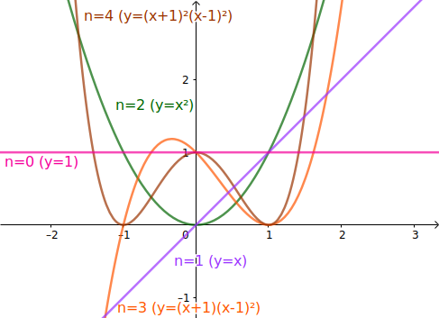
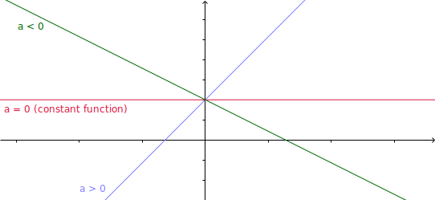

Section 4.3 関数の例
Subsection 4.3.1 多項式関数
関数のうち最も単純なものは、多項式で表される多項式関数である。
Definition 4.12. 多項式関数.
多項式で表される関数を多項式関数(polynomial function)という。 特に、多項式の次数が\(n (\in \mathbb{N})\)であるとき、この関数をn次関数という。0次関数は\(f(x) = 3\)のように、入力\(x\)に依らず同じ値を出力する。そのため、0次関数を定数関数(constant function)ともいう。
\(n\)次関数\(y = f(x)\)のグラフの例を図4.13に示す。 2次関数より次数が大きくなると、\(n - 1\)個の頂点がグラフ上に現れることが多い。ただし、\(f(x) = x^3\)のグラフのように、頂点がない場合もある。

Subsection 4.3.2 1次関数
Definition 4.14. 1次関数.
多項式関数のうち、1次式で表される関数を1次関数(linear function)といい、一般に\(f(x) = ax + b (a, b \in \mathbb{R}, a \ne 0)\)と表される。 \(a\)をこの1次関数の傾き(slope)、\(b\)をこの1次関数の切片(intercept)という。左辺が1次関数である\(y = ax + b\)のグラフは図4.15のように直線(line)となり、傾き\(a\)の値によって\(x\)軸となす角度が変化する。
